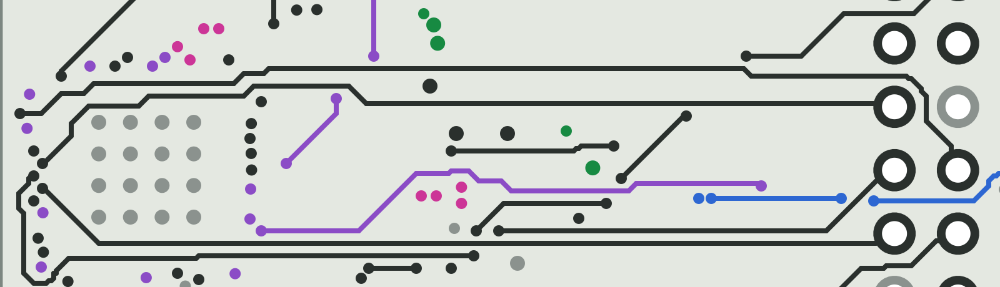
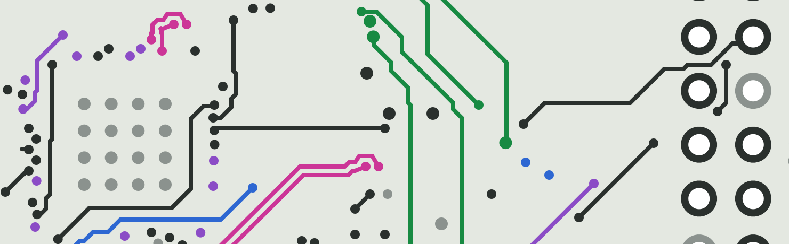
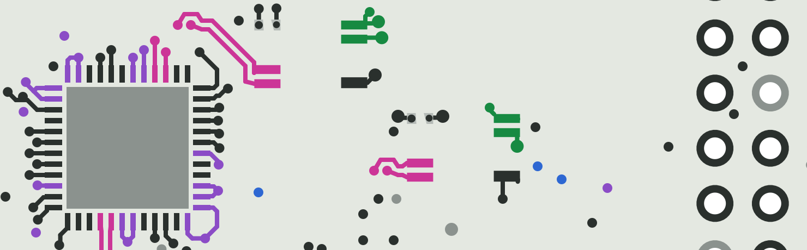
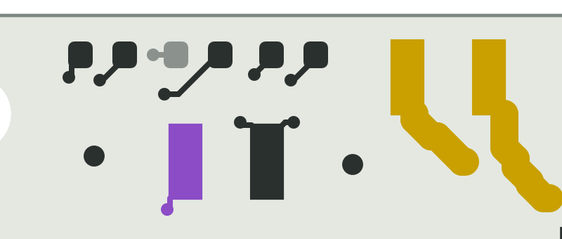
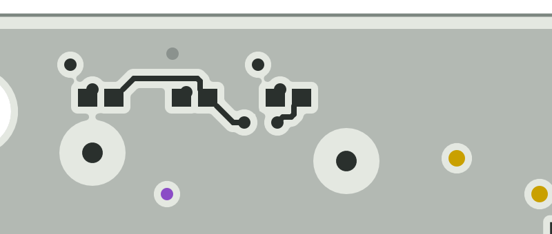
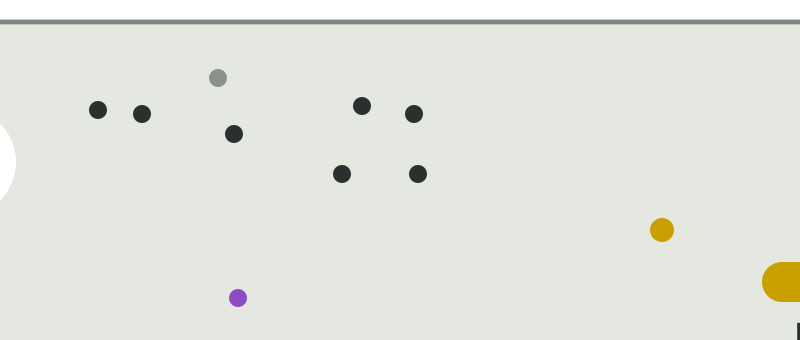

Board 49 × 68 mm (session 2.b, Nick's 3 + 3 mm), U1 in the west pocket (the centre placement did not route: OPTIONS.md addendum A3), the SPI on a reserved Internal 2 lane routed first, the inserts 1.5 mm nearer the wall, the jumpers on top at the north edge, JLCPCB's limits in the design rules (DFM.md). Left: Sofar's mote, its copper placed as this board places the block. Right: this board. Generated by tools/review_views.py; the numbers are in out/m4/summary.json.
Colours: data pairs bus VBUS 3V3 rails 5 V to the Pi signals / GND tracks GND fills. Left: Sofar's mote, its copper placed as this board places the block. Right: this board. Same renderer, same region, same scale (grid 0.1 mm cells; the images are 40 px/mm).
port1 pair x -6.5…7.5, y 25.5…32.5 mm · block ADIN
Port-1 data pair: U1 pins 27/28 (north edge of U1 at rot 90) to T1 pads 1/2 in the band; the mote's U1 and T1 sit elsewhere, so the mote view shows only the ADIN block's copper placed as here
Fixed / as built: Session 2.b: the pair's 45° runs are single segments (15 segments per leg, was 25) and the P leg keeps 0.11 mm under the mote's 9.5 (9.39 / 8.77; T1 0.2 mm north of session 2's relation). Two vias straight out of U1's pins, Internal 1, one swap, Top into T1's pads along the straight lane.
Versus the mote: Sofar leaves the pins by vias 0.75 / 1.1 mm out and runs the port on Internal 1 too, but enters T1's pads from the body side with a via behind each pad; here the pads face U1 and the pair enters from the open side.
Still open: 0.11 mm of margin on P: a rerun is not byte-identical. The centre placement (OPTIONS addendum A3) would give the mote's own geometry but needs the body-side entry to route.
Sofar's mote, Top (block ADIN transform)This board, Top
port2 pair x -7.0…11.0, y 34.0…41.5 mm · block ADIN
Port-2 data pair: U1 pins 4/5 (south edge) through the pocket's south exit to T2 pads 1/2
Fixed / as built: Leaves U1 pins 4/5 on Top through the pocket's south exit (3 mm taller than session 2), swaps once, gets its via pair beside T2's approach. 19.93 / 20.61 mm (mote 21.3; session 2 17.98 / 18.62: the exit is 1.25 mm further south now).
Versus the mote: Sofar's port 2 is 21 mm of Internal 1 to a T2 on the far side of the processor.
Still open: None at the bar; the margin is 0.7 mm.
Sofar's mote, Top (block ADIN transform)This board, Top
spi lane x -10.5…29.5, y 27.0…38.5 mm · no mote counterpart
The SPI lane: from Sofar's vias at U1's west side east on Internal 2 under U1 and across the band to J1 pins 19-24, routed first (session 2: 25 mm down the west edge past the inserts)
Fixed / as built: Nick's rule for 2.b: the SPI (SCK, MOSI, MISO, ~CS) is routed FIRST on a reserved Internal 2 lane from Sofar's fan-out vias at U1's west side, east under U1 and across the band to J1 pins 19-24; Bottom is forbidden for it and Top serves only the pin escape. Session 2's 25 mm detour down the west edge past the inserts is gone: 34 / 35 / 40 / 41 mm of new track against 66.5 / 67.6.
Versus the mote: No counterpart: the mote's SPI goes to its own processor on Internal 1.
Still open: The lane crosses the port-1 bus legs (Internal 1) and the 3V3 / 1V8 corridors once each. Length matching is not required (LESSONS §5).
no mote counterpart on Internal 2 (In3)

This board, Internal 2 (In3)
no mote counterpart on Internal 1

This board, Internal 1
no mote counterpart on Top

This board, Top
int fanout x -10.5…-5.5, y 29.0…34.5 mm · block ADIN
~{ADIN_INT} fan-out at the board's west edge: U1.39 -> the hand via (0.525 mm from the edge) -> R1.1
Fixed / as built: Sofar's ~{ADIN_INT} fan-out whole: the hand via now follows the ADIN block (-5.05, -2.25 from U1), 0.525 mm from the new west edge, 0.207 mm from other-net copper, proven by m3_copy.
Versus the mote: Identical copper but for the via's position.
Still open: None.
Sofar's mote, Top (block ADIN transform)This board, Top
u2 u3 pocket exit x -10.0…3.0, y 36.0…42.0 mm · block ADIN
The pocket's south exit: U2 / U3 (1.8 V and 3.3 V switches, bottom) with their fan-out vias, the port-2 pair above, 3V3 / 1V8 / ADIN_PWR leaving east; 3 mm taller than session 2
Fixed / as built: The exit is 3 mm taller (MP1 2.5 mm south, the pocket y 26.2 … 41.3); U2 / U3's balls get their vias before the pairs (fan-out first) anywhere but the pairs' exit lanes; 3V3, 1V8 and ADIN_PWR leave east on Internal 2 under the band.
Versus the mote: Sofar has U2 / U3 beside the processor with room on three sides.
Still open: U2.B2 (ADIN_PWR) and U3.A2 (3V3) still found no fan-out spot within 1.7 mm and were routed afterwards (connected).
Sofar's mote, Top (block ADIN transform)This board, Top
Fixed / as built: T1 at (3.7, 29.45): session 2's relation to U1 but 0.2 mm north (the pair's margin). Rigid copy; C19 / R14 as their own rigid piece at the mote's spot relative to T1.
Versus the mote: The T1 cluster is a rigid copy (pads, Sofar's tracks and vias to 0.001 mm); only the data-pad approach is new.
Still open: Sofar's pads 6/7 are 0.24 mm apart (the bus class asks 0.35): 4 DRC items per transformer, in the exclusion table as on the mote.
Sofar's mote, Top (block P1T transform)This board, Top
north band x 4.5…24.5, y -0.5…8.0 mm · no mote counterpart
North band: the LEDs D10 / D8 / D9 on the edge, JP1 (5 V to the Pi) and JP2 (LED supply) on top beside them, FID3 / FID4; the LED resistors and FID1 / FID2 underneath
Fixed / as built: Both cut jumpers on top at the north edge with nothing tall beside them (Nick): JP1 (5 V to the Pi) at the band's east end, JP2 (LED supply) behind the LEDs; FID3 / FID4 ≥ 3.35 mm from the edge (JLCPCB, DFM row 26). The 5 V path L6 → JP1 → J1 pins 2/4 crosses J1's north end on an inner layer.
Versus the mote: No counterpart (the LEDs, the jumpers and the Pi are new on this board).
Still open: The 5 V path is ≈ 33 mm of 1.0 mm track instead of session 2's 8 (OPTIONS addendum A4: ≈ 35 mV at 1 A).
no mote counterpart on Top

This board, Top
no mote counterpart on Bottom

This board, Bottom
no mote counterpart on Internal 1

This board, Internal 1
u11 payload x 27.0…38.5, y 49.0…62.0 mm · no mote counterpart
Load switch U11 at the strip's south end: VBUS in (pre-stitched via), VBUS_OUT to J5 (0.6 mm), its signals to J1
Fixed / as built: Unchanged from session 2 but for the frame: VBUS pre-stitched at U11 pin 1, VBUS_OUT (0.6 mm) on Internal 2 to J5 3 mm further south.
Versus the mote: No mote counterpart (the load switch is new on this board).
Still open: None.
no mote counterpart on TopThis board, Top
no mote counterpart on Internal 2 (In3)This board, Internal 2 (In3)
no mote counterpart on BottomThis board, Bottom
pi5v strip north x 23.5…38.5, y 0.0…25.0 mm · block B5V
5 V cell at the strip's north end and the 5 V path: L6 -> JP1 in the north band -> J1 pins 2/4 across J1's north end
Fixed / as built: JP1 left the strip's north end for the north band; the 5 V cell, the bottom 5V_PI pour and the Internal 2 patch are as session 2; the bottom GND island under C58 / TP38 is dropped by the fill now (island removal 'always', DFM row 24).
Versus the mote: Sofar's 3V3 output sits on an In4 plane island with the same divider tap; here the same cell is copied twice.
Still open: None.
Sofar's mote, Top (block B5V transform)This board, Top
insert mp1 x -10.5…12.0, y 39.0…60.0 mm · block P1L
Port-1 inductor L1 (3 mm south) with the insert rings MP1 / MP2 (1.5 mm nearer the wall, 2.5 mm south) and the bus feeds; the P1L block's copper
Fixed / as built: The inserts 1.5 mm nearer the wall (ring copper on the brief's 0.5 mm edge line), the port-1 pair 2.5 mm south with L1's envelope (3 mm); the 1.5 mm bus feeds start 3.31 mm from the insert centre (NPTH-to-track, DFM row 13); the planes keep 0.3 mm from holes (DFM row 12).
Versus the mote: Rigid copy of the inductor block; the feeds and the data legs are new (the mote's inserts are elsewhere).
Still open: Sofar's 2.0 mm BM1_N stub at L1 pad 2 is 0.31 mm from Sofar's GND via (the bus rule asks 0.35): 1 DRC item, declared. The insert contact's 76 DRC items are the mote's (Sofar Q6).
Sofar's mote, Top (block P1L transform)This board, Top